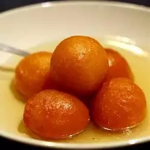

Gulab Jamun

Description
This is a traditional Indian dessert comprised of spongy, milky balls soaked in rose scented syrup. It is delicious with fresh cream, Kulfi, ice cream etc. To make it even more fancy, sprinkle gold-leaf on top of each serving!
Ingredients
- 1 cup dry milk powder
- 3 tablespoons all-purpose flour
- 2 tablespoons ghee (clarified butter), melted
- 1/2 teaspoon baking powder
- 1/2 cup warm milk
- 1 tablespoon chopped almonds (Optional)
- 1 tablespoon chopped pistachio nuts (Optional)
- 1 tablespoon golden raisins (Optional)
- 1 pinch ground cardamom
- 1 quart vegetable oil for deep frying
- 1 1/4 cups white sugar
- 7 fluid ounces water
- 1 teaspoon rose water
Steps